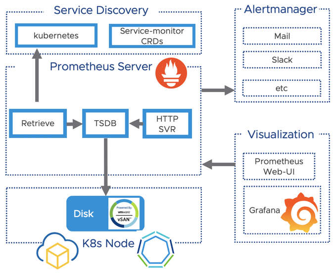
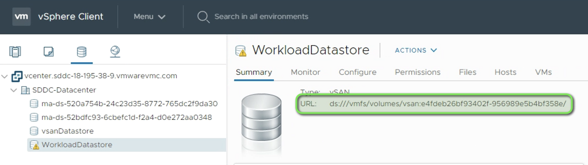
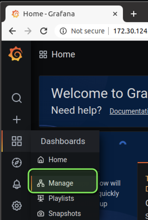
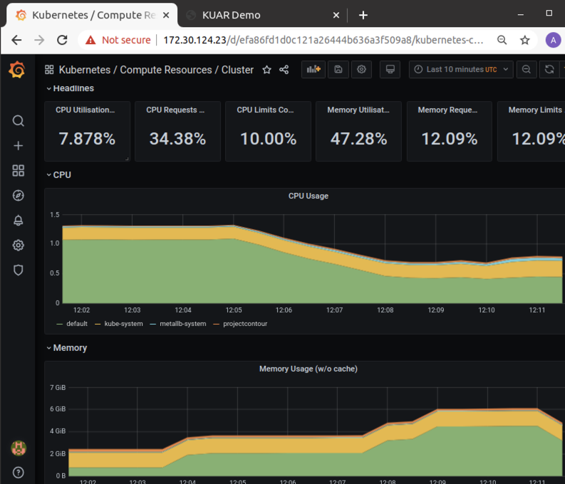
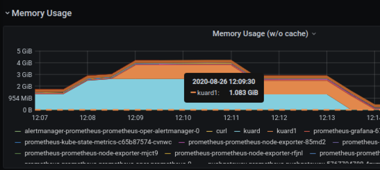
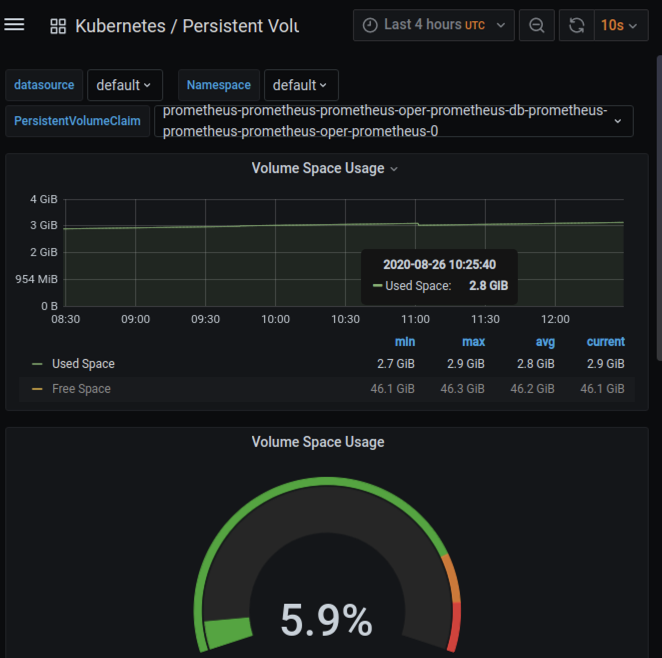

Prometheus was the second project which joined the Cloud Native Computing foundation after Kubernetes in 2016. Originally it was founded 2012 at Soundcloud but is now completely vendor independent and open source. A lot companies have already adopted Prometheus, and the project has a highly active community. Customers which are running VMware Tanzu Kubernetes Grid+ are provided with full Enterprise support included with their TKG+ subscription.
While Prometheus is free it doesn’t´t mean that it´s easy and straightforward to understand and to deploy. This is why I made this blogpost to get your Prometheus instance on VMware-Cloud and any K8s environment up and running in - let´s say less than 4 Minutes ;).
To start with this tutorial you will need:
In this blogpost we will deploy prometheus and visualise our K8s cluster metrics like the CPU utilisation or the utilisation of our Persistent Volumes with Grafana.
Let´s have a quick look at the prometheus architecture below. I simplified the diagram to the components which we will focus on later in the tutorial:
The picture below shows the Architecture of Prometheus: 
We are going to leverage the Prometheus operator deployed via a helm chart. It packages up all the components of Prometheus which are necessary for our logging stack.
If you don´t know what Helm is I recommend you to check out this Link. If you want to learn more about the Operator-Pattern in K8s i recommend to check out this link.
We want to persist our metrics and will make use of the Cloud-Native Storage Integration of vSphere. Notice that you need at least vCenter version 6.7U3 which provides the required API.
First we want to make sure that we have a Storage Class created accordingly in K8s pointing to a Datastore in vSphere.
If you have a usable default Storage Class already you can skip this step. You may want to check if you have a Storage-Class already available by running:
$ kubectl get sc
NAME PROVISIONER
default (default) csi.vsphere.vmware.com
If you have a working default Storage class for your environment you can skip the creation. Otherwise you can create the storage class accordingly or use the “sc.yaml” file from my repo and adjust it to fit to your environment.
# Download the Storage Class example file:
$ wget https://raw.githubusercontent.com/appdess/prometheus-operator-vsphere/master/sc.yaml
Make sure you replace the value for “datastoreurl” according to your environment. You can get this value from the vSphere or VMC-UI in the “Storage” Tab.

# adjust the "datastoreurl" according to your environment BEFORE you apply the storage-class!
kind: StorageClass
apiVersion: [storage.k8s.io/v1](http://storage.k8s.io/v1)
metadata:
name: default # this is the storage class name we will create in K8s
namespace: default
labels:
annotations:
[storageclass.kubernetes.io/is-default-class:](http://storageclass.kubernetes.io/is-default-class:) "true"
provisioner: [csi.vsphere.vmware.com](http://csi.vsphere.vmware.com/)
allowVolumeExpansion: true
parameters:
storagePolicyName: "vSAN Default Storage Policy" # our vSAN Storage policy from vCenter
**datastoreurl**: **"ds:///vmfs/volumes/vsan:e4fdeb26bf93402f-956989e5b4bf358e/**" # the Datasture-URL of our WorkloadDatastore
# Apply the Storage Class in your Environment**
$ kubectl apply -f sc.yaml
# this should output
$ storageclass.storage.k8s.io/default created
Ok - we´ve successfully created a Storage Class which points to our vSAN Datastore and leverages the “vSAN Default Storage Policy” - we´re good to deploy Prometheus.
We need to adjust the default deployment to fit to our environment. The great thing leveraging helm is that we can specify a central file called “values.yaml” which will override the given standard values. This is how you customise deployments with helm to fit to your infrastructure and requirements.
You can customise the deployment leveraging a yaml file. My file below is called “values.yaml” and specifies the standard PW for Grafana, the vSphere Storage Class we created before and a setting for the serviceMonitor discovery of Prometheus.
If you are using the Storage Class “default” in your environment you can simply use my updated file and start the deployment via Helm.
Below is my customisation i applied to the original file - you can customise further or skip this step and continue with the helm deployment by leveraging my template file below.
# OPTIONAL BOX - you may want to use my prepared file below instead of customisig your own
# get the latest values.yaml file and edit it accordingly or take my example:
wget https://raw.githubusercontent.com/helm/charts/master/stable/prometheus-operator/values.yaml
# change the admin PW for Grafana
adminPassword: VMware1!
# Change the Storage Spec to use our "default" Storage Class
storageSpec:
volumeClaimTemplate:
spec:
storageClassName: default
accessModes: ["ReadWriteOnce"]
resources:
requests:
storage: 50Gi
# set the value for service-discovery to discover sevice-montors (crds) created in the namespace
serviceMonitorSelectorNilUsesHelmValues: false
Deploy the Prometheus operator to our K8s Cluster
# get the values exmaple file which contains the changes from above:
$ wget https://raw.githubusercontent.com/appdess/prometheus-operator-vsphere/master/values.yaml
# install the Prometheus operator via helm customized by our file:
$ helm install prometheus stable/prometheus-operator -f values.yaml
# this should output the following:
The Prometheus Operator has been installed. Check its status by running:
Verify the status of the components:
$ kubectl --namespace default get pods -l "release=prometheus"
NAME READY STATUS RESTARTS AGE
prometheus-prometheus-node-exporter-dhcfm 1/1 Running 0 93s
prometheus-prometheus-node-exporter-gcn6q 1/1 Running 0 93s
prometheus-prometheus-node-exporter-p2gs4 1/1 Running 0 93s
prometheus-prometheus-node-exporter-x7ff9 1/1 Running 0 93s
prometheus-prometheus-oper-operator-769d757547-vh9kc 2/2 Running 0 93s
Let´s also check the services which have been created by our deployment. We are especially interested in the Grafana service since we want to access the Dashboard to view our collected metrics.
$ kubectl get svc
NAME TYPE CLUSTER-IP EXTERNAL-IP PORT(S) AGE
prometheus-grafana ClusterIP 100.64.44.227 <none> 80/TCP 14m
prometheus-kube-state-metrics ClusterIP 100.69.121.82 <none> 8080/TCP 14m
prometheus-operated ClusterIP None <none> 9090/TCP 14m
You can either change the internal Cluster-IP of “prometheus-grafana” to an external loadbalancer IP or simply make the user interface available leveraging a kubectl port-forwarding to your local machine.
How to setup port forwarding to your local machine:
$ kubectl port-forward deployment/prometheus-grafana 8080:3000
Forwarding from 127.0.0.1:8080 -> 3000
Forwarding from [::1]:8080 -> 3000
You can now access Grafana by opening a browser to http://127.0.0.1:8080
How to configure a load balancer for Grafana:
$ kubectl patch svc prometheus-grafana -p '{"spec": {"type": "LoadBalancer"}}'
# check your IP to access Grafana:
$ kubectl get svc prometheus-grafana
NAME TYPE CLUSTER-IP EXTERNAL-IP PORT(S)
prometheus-grafana LoadBalancer 100.66.133.185 **172.30.124.23** 80:31365/TCP
You can now access Grafana by opening a browser and point it to http://172.30.124.23 (Your external IP from above)
Depending which method you choose you access the dashboard either via:
Next we want to add our first dashboard to view our Cluster Resources. You can do this by navigating to “Dashboard” and “Manage”.

Now you can select an example Dashboard. I´ve chosen to select the “Cluster Dashboard” to get an holistic view about all my K8s Cluster Resources.
You will notice there are a lot default templates already available which you can customise due to your needs. You can also drill down on the resources to investigate for example what namespaces and pods are consuming the most memory.

While the above graph shows the memory consumption per namespace, the graph below shows the memory consumption per POD in a given namespace.

Containers are stateless per default but our data should not be lost when the containers for our deployment are updated or restarted. Let´s do a quick check if our Persistent Volume was successfully created and the data is written to it accordingly.
We are able to do this and view the Persistent Volumes as well as their current storage consumption in the Grafana UI. The dashboard is in the templates folder and simply called “Persistent Volumes”:
Viewing our Persistent Volume Claim including the usage created with our Storage Class:

My “prometheus-ingress.yaml” below:
apiVersion: networking.k8s.io/v1beta1
kind: Ingress
metadata:
name: prometheus
namespace: default
spec:
rules:
- host: alertmanager.set.local
http:
paths:
- backend:
serviceName: prometheus-prometheus-oper-alertmanager
servicePort: 9093
- host: grafana.set.local
http:
paths:
- backend:
serviceName: prometheus-grafana
servicePort: 80
- host: prometheus.set.local
http:
paths:
- backend:
serviceName: prometheus-prometheus-oper-prometheus
servicePort: 9090
That´s it for the first post - we successfully setup Prometheus with Persistent Storage and Grafana to visualise our data. Thank you for reading and stay tuned for the next topics like alerting, setting up ingress and how to get your application metrics into Prometheus.